Initiatives that serve, preserve, and uplift our community
⸻ ❋ ⸻
Project 01
Musi River Photo Frame Cleaning Initiative
As part of our environmental and spiritual preservation efforts, Dharma Kala Vahini volunteers organized a cleanup drive near the Musi River where several sacred photo frames had been discarded. Our team carefully collected these frames, cleaned them respectfully, and relocated them to a nearby temple so they could be preserved with dignity. This activity not only helped clean the surroundings but also ensured that religious symbols were treated with proper respect.
❋ ❋ ❋
Project 02
Temple Cleaning Service Activity
Dharma Kala Vahini organized a temple cleaning drive to maintain the purity and peaceful environment of the temple premises. Volunteers gathered early in the day and worked together to sweep the temple grounds, remove waste, and organize the surroundings. This initiative was conducted with the intention of promoting cleanliness, community service, and devotion towards maintaining sacred places.
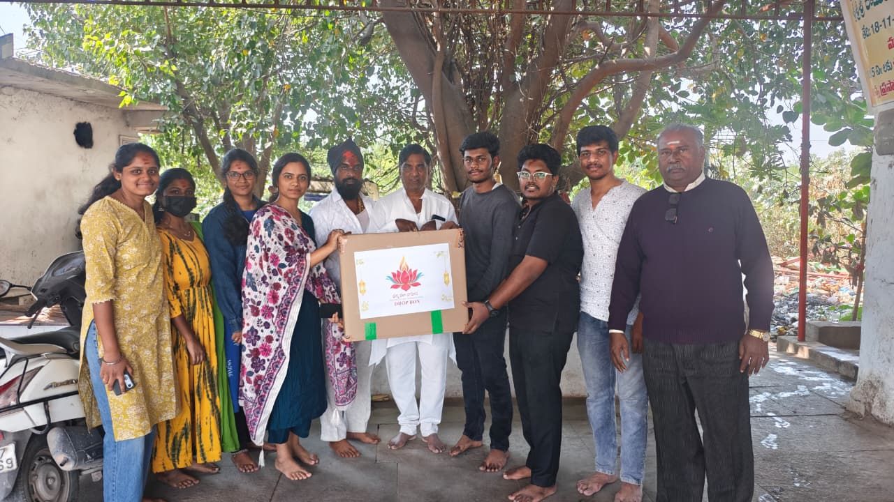
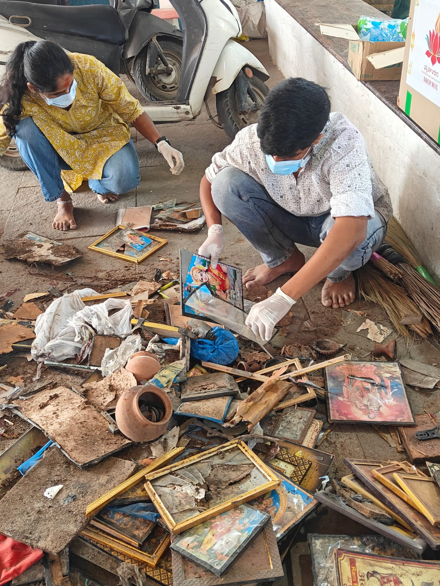
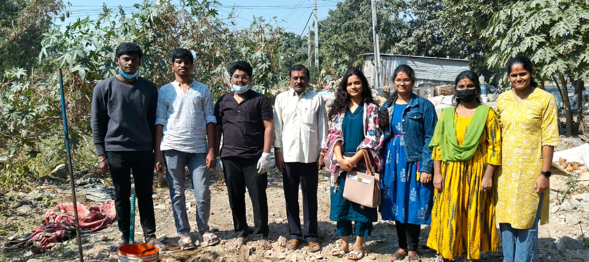
❋ ❋ ❋
Project 03
Maha Shivaratri Jagaram Spiritual Event
During the auspicious occasion of Maha Shivaratri, Dharma Kala Vahini hosted a special Jagaram event dedicated to Lord Shiva. The night was filled with devotional activities including Shiva idol making, bhajans, chanting of sacred mantras, and spiritual discussions. Participants stayed awake throughout the night in devotion, creating a vibrant and uplifting spiritual atmosphere that brought the community together.
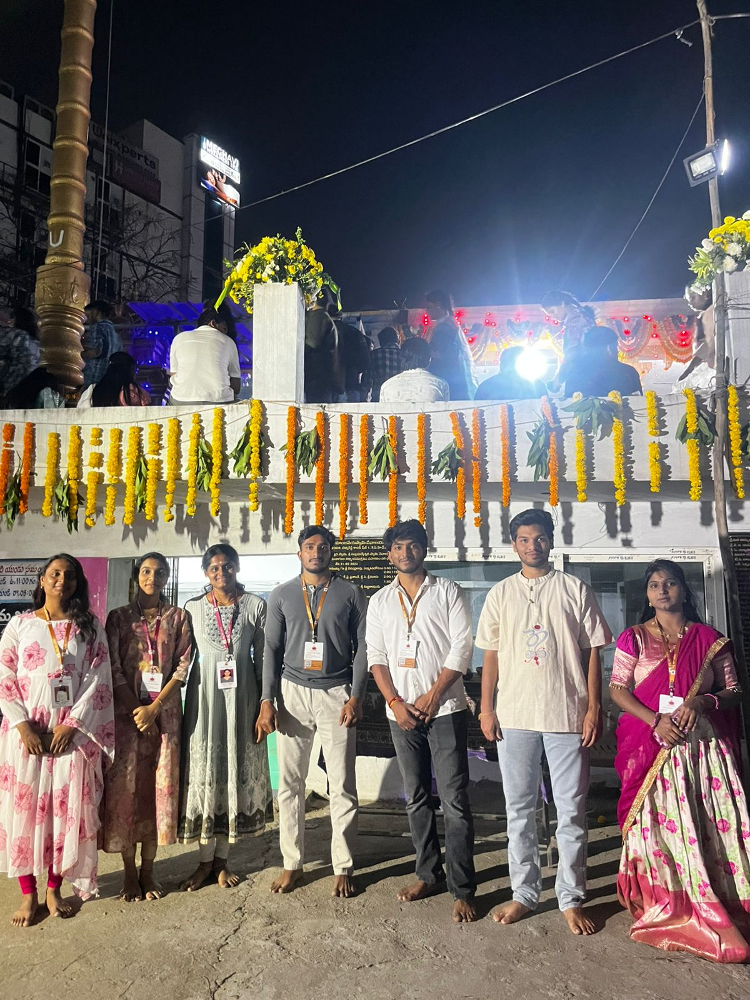
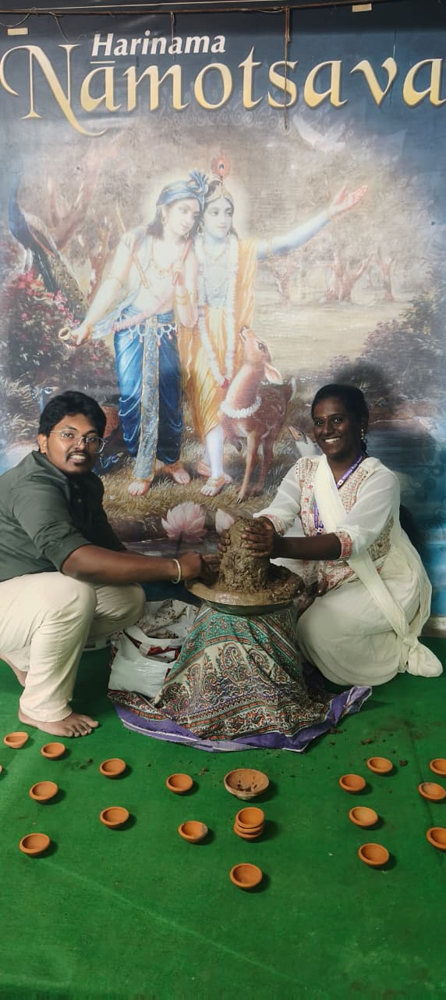
❋ ❋ ❋
Project 04
Mana Ramayanam – Cultural Outreach & Education Drive
Mana Ramayanam is a cultural outreach initiative aimed at inspiring and educating children from orphanages through the timeless values of the Ramayana. The program was conducted at Chavadi Child Welfare Society, Hyderabad, where children actively participated in a variety of activities such as drawing competitions, fancy dress based on Ramayana characters, interactive quizzes, and Ramayanam screening sessions.
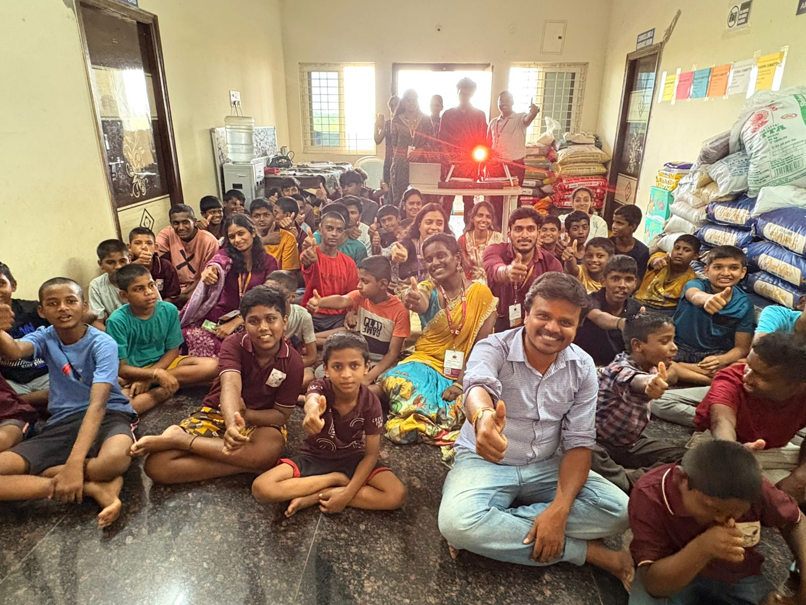
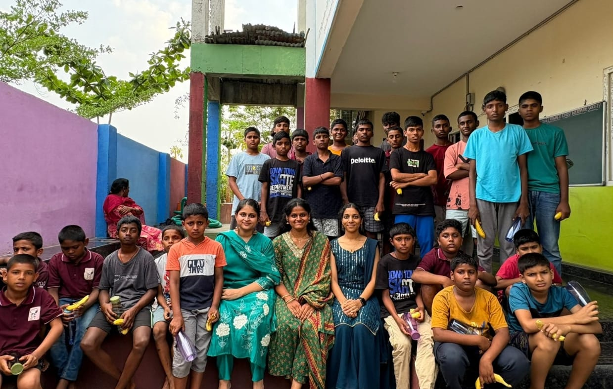
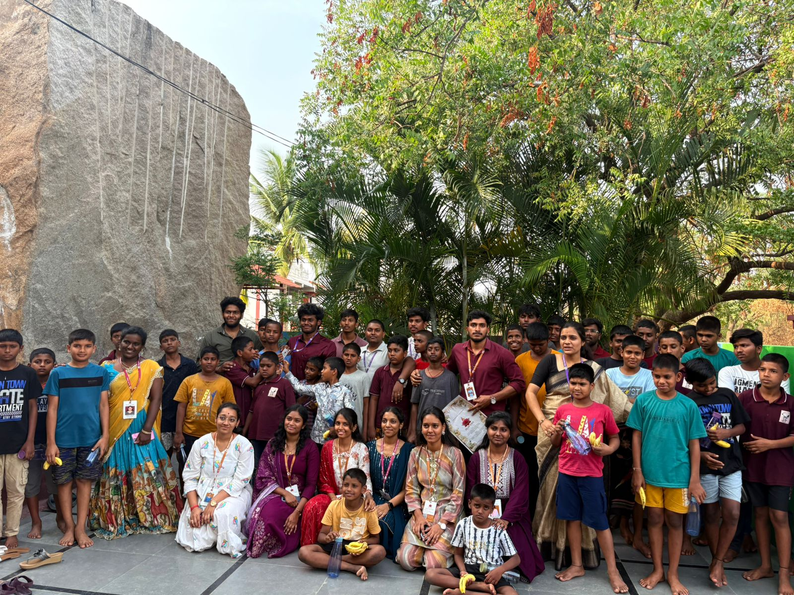
Project 05
Project Chalivendhram Phase-1 – Butter Milk Distribution
On the auspicious occasion of the 4th Birthday Celebration of Mullapudi Anushree Chowdary, her family — Mullapudi Murali garu and Mullapudi Pushpa Latha garu from Malta, Europe — generously sponsored Chalivendhram Phase-1, a Butter Milk Distribution drive. The event was conducted at Gajularamaram Centre, Kukatpally (Project No. 06) and positively impacted 100+ people in the community.
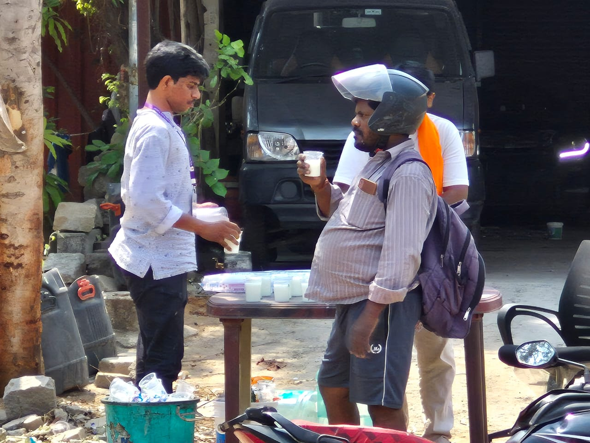
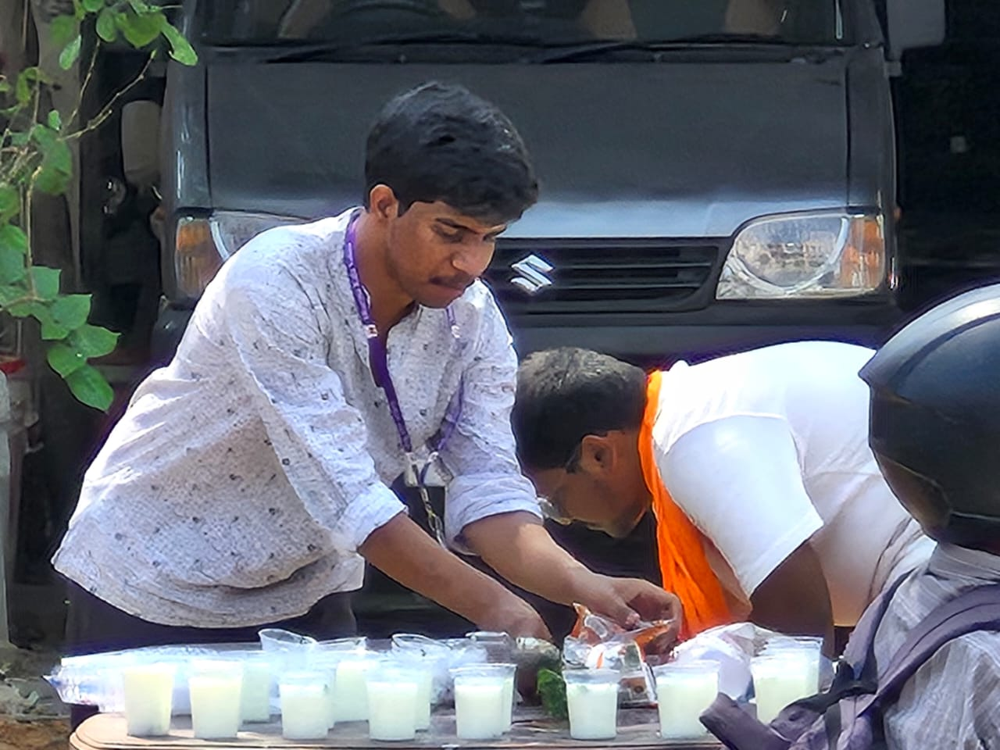
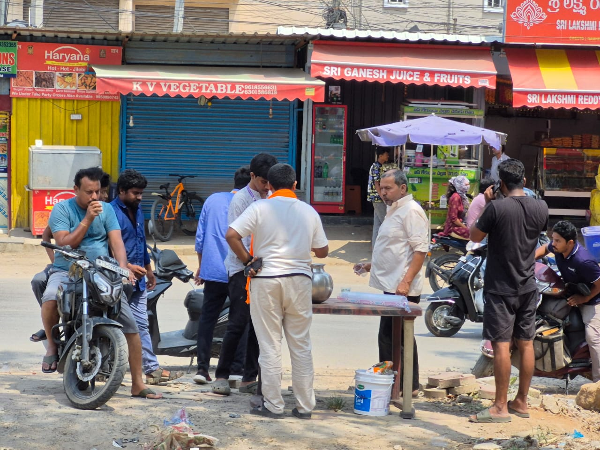
❋ ❋ ❋
Project 06
Project Chalivendhram Phase-2 – Butter Milk Distribution
On the occasion of the 25th Anniversary Celebration of Lingamallu Kishore garu and Lingamallu Sumalatha garu, their family generously sponsored Chalivendhram Phase-2 — a Buttermilk Distribution drive. The project was conducted at Pragathi Nagar, in front of Kanaka Sree Photo Studio (Project No. 07), impacting 500+ people. A beautiful celebration marked with kindness, seva, and giving back to the community.
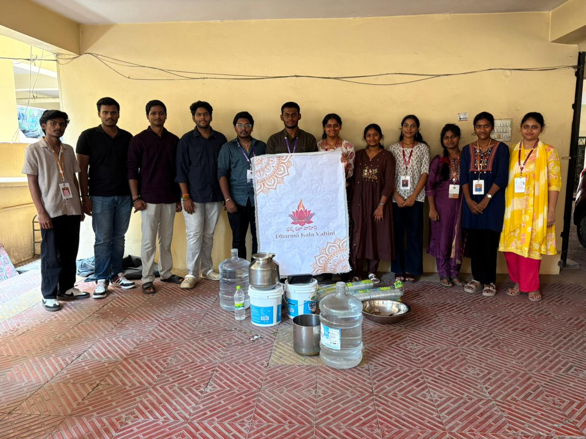
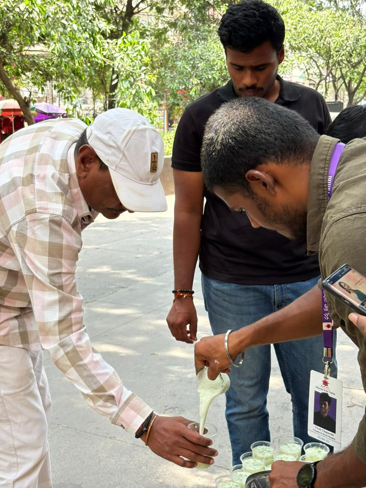
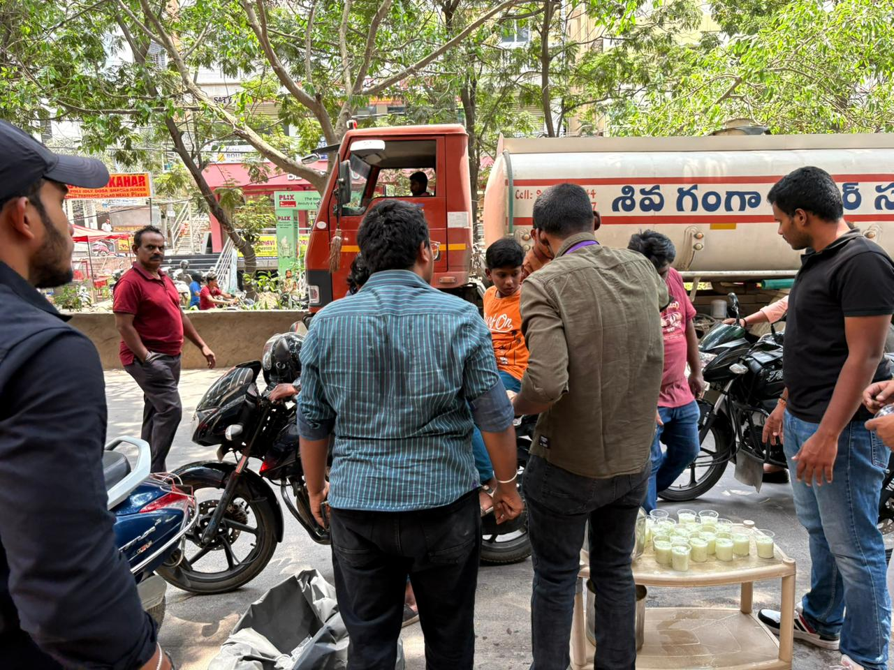
Project 07
Project Chalivendhram Phase-3 – Butter Milk Distribution
On the auspicious occasion of the 19th Birthday Celebration of Chitipotu Poojitha, her parents — Chitipotu Srinivas Rao garu and Chitipotu Aruna Kumari garu — generously sponsored Chalivendhram Phase-3, a Buttermilk Distribution drive. The event was conducted at Bachupally, beside Reddy Labs (Project No. 08), positively impacting 500+ people in the community. This beautiful celebration was turned into a meaningful act of seva, spreading kindness, compassion, and the spirit of giving back under the summer sun.